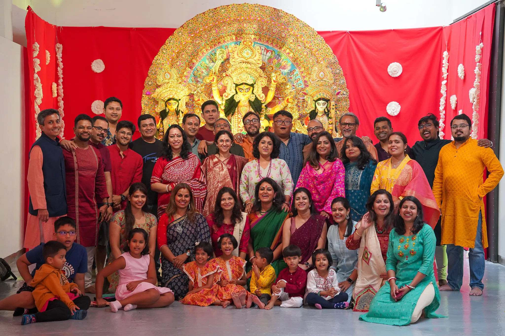

EXT. BARCELONA — OCTOBER, 2022
Four friends. Eleven days. An idea that had no business working.
That's not a slogan — it's the actual timeline. What started as a scramble to bring Durga Puja to a city with no pandal, no priest on standby, and no idea if anyone would show up, is now a non-profit with a founding date, a growing family, and a fibreglass Durga who made her own journey from Kolkata to Catalunya.
This page isn't really about an organisation. It's about why a few thousand kilometres never actually got in the way of being Bengali.
INT. A KITCHEN IN BARCELONA — SUNDAY, 8PM
Mustard oil hits a hot pan. For a second, the flat doesn't smell like Eixample. It smells like home.
Culture doesn't travel in suitcases as much as it travels in small, stubborn habits — the songs you still hum, the fish you still hunt down at the one shop that stocks it, the language you switch into without noticing when you're angry or overjoyed. Move a person far enough from Bengal and the geography changes. The habits don't.
BCA exists because those habits need somewhere to be shared, not just privately kept. A festival gives people a date to show up. What actually keeps them coming back is everything that isn't on the flyer — the language, the food, the music, the arguments about football, the jokes that only land in Bengali.
MONTAGE — WHAT MAKES A BONG A BONG
Shorshe ilish on the stove the first warm evening of the year — and a five-minute debate over whether it needs more mustard.
A college band plugging in guitars and turning a 130-year-old Tagore song into a rock anthem — and absolutely nobody objecting.
"Mohun Bagan or East Bengal?" — four words that can end a friendship or start one, ten thousand kilometres from Kolkata.
A conversation that was supposed to last twenty minutes, still going strong at midnight, over the third round of tea.
A new kurta on Poila Boisakh, even when nobody else in Barcelona notices it's the Bengali New Year.
Watching Satyajit Ray with subtitles on, in a language most of the room in the flat-share doesn't speak — and not caring.
OUR HISTORY
2022
It began with a spark — four friends, Sanjay Das Gupta, Anindya Saha, Siddharth Ghosh and Shreyashree Nag, a bold idea, and just eleven days to bring Maa Durga to Barcelona. The Bengali Cultural Association was born, driven by one line of faith:
"Maa Durga nijei nijer pujo koraben. Shob hoye jaabe."
2024
That dream came alive. With unity and unwavering dedication, we brought an Ek-Chala fibreglass idol from Kumartuli — Kolkata's centuries-old hub of Durga artisans — to Spain. The same year, BCA earned official recognition as a non-profit organisation, becoming a cultural anchor for the Bengali diaspora here.
Now
A new generation of leaders is picking this up, carrying the same faith forward: where there is devotion, everything is possible — Maa will guide the way.
WHO'S ACTUALLY BEHIND THIS
Sanjay, Anindya, Siddharth and Shreyashree started it. Since then, it's been kept alive by whoever's free that weekend to haul speakers, translate a form into three languages at once, or pour the twentieth cup of tea of the evening. There's no fixed roster — just people who care enough to be useful.
If that sounds like your kind of people, you don't need an invitation. Come to an event, say hello, and you're already halfway in.
READ MORE
Our annual brochure, Sharodiya, is a longer look at the year in photos, essays and community writing.
The 2025 edition — photos, essays and community writing from last year.
This year's brochure is in the works — it'll land here ahead of Durga Puja 2026.
Follow us
Stay connected with our community and get the latest updates on events and celebrations.